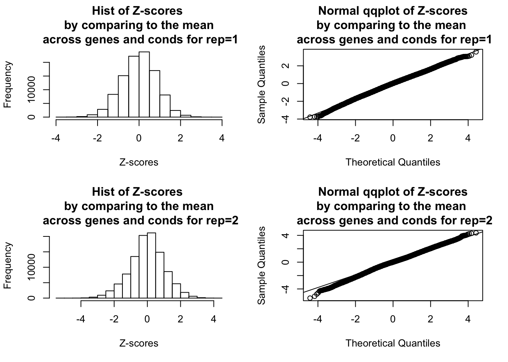
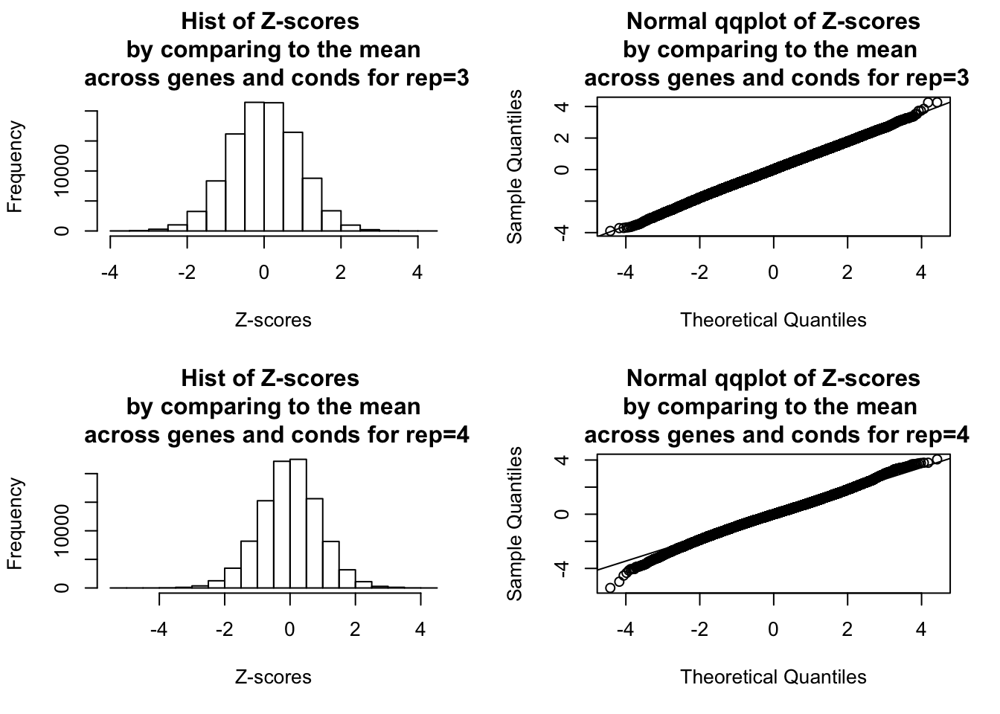
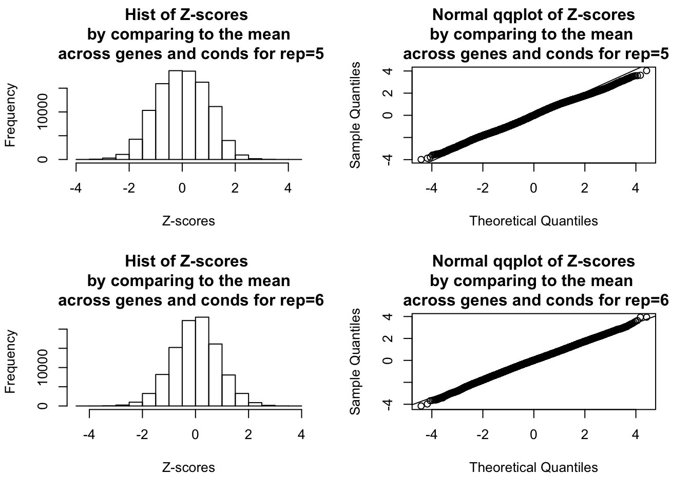
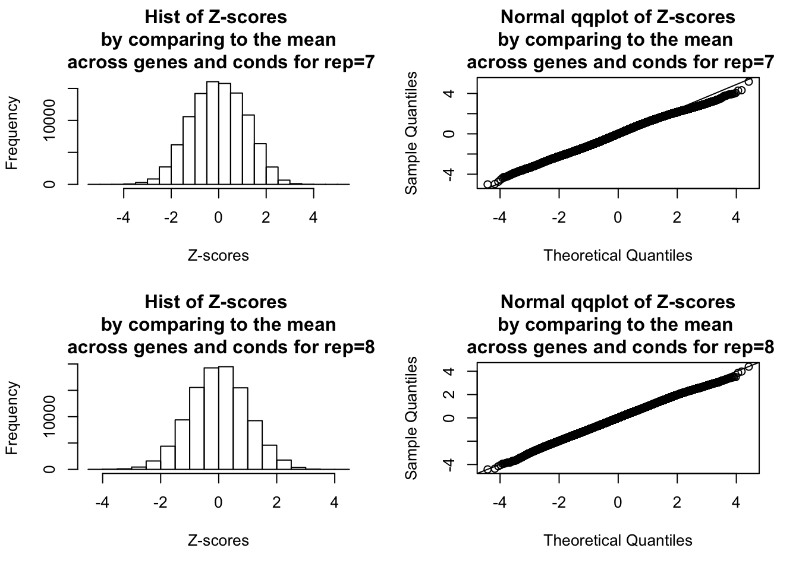
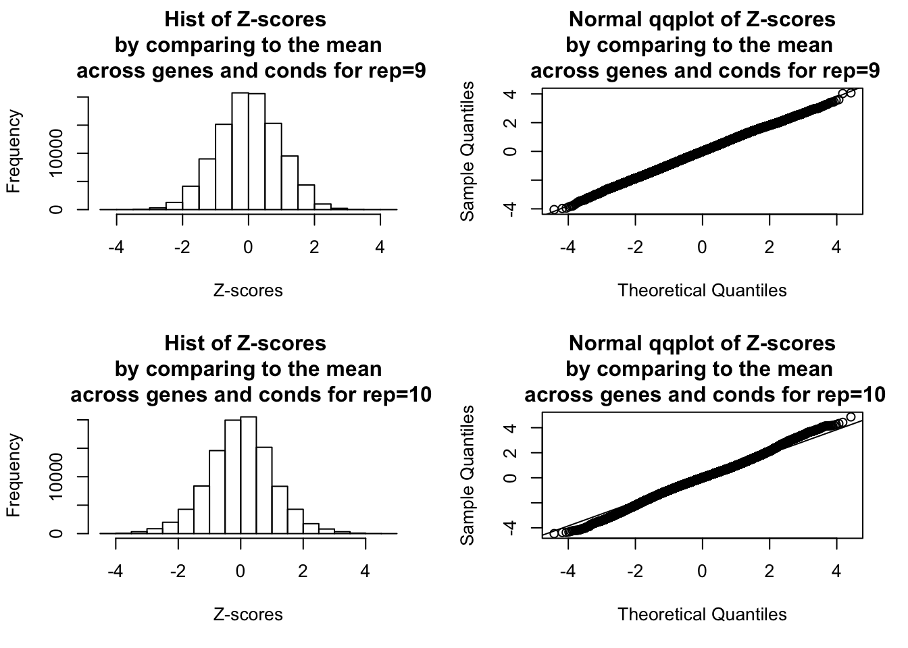

Last updated: 2021-03-02
Checks: 7 0
Knit directory: tbdata_sim/
This reproducible R Markdown analysis was created with workflowr (version 1.6.2). The Checks tab describes the reproducibility checks that were applied when the results were created. The Past versions tab lists the development history.
Great! Since the R Markdown file has been committed to the Git repository, you know the exact version of the code that produced these results.
Great job! The global environment was empty. Objects defined in the global environment can affect the analysis in your R Markdown file in unknown ways. For reproduciblity it’s best to always run the code in an empty environment.
The command set.seed(20210202) was run prior to running the code in the R Markdown file. Setting a seed ensures that any results that rely on randomness, e.g. subsampling or permutations, are reproducible.
Great job! Recording the operating system, R version, and package versions is critical for reproducibility.
Nice! There were no cached chunks for this analysis, so you can be confident that you successfully produced the results during this run.
Great job! Using relative paths to the files within your workflowr project makes it easier to run your code on other machines.
Great! You are using Git for version control. Tracking code development and connecting the code version to the results is critical for reproducibility.
The results in this page were generated with repository version 8897e57. See the Past versions tab to see a history of the changes made to the R Markdown and HTML files.
Note that you need to be careful to ensure that all relevant files for the analysis have been committed to Git prior to generating the results (you can use wflow_publish or wflow_git_commit). workflowr only checks the R Markdown file, but you know if there are other scripts or data files that it depends on. Below is the status of the Git repository when the results were generated:
Ignored files:
Ignored: .DS_Store
Ignored: .Rhistory
Ignored: output/.DS_Store
Untracked files:
Untracked: code/code_sim_null_summary.R
Untracked: code/code_sim_null_v2_summary.R
Untracked: output/null_output/
Untracked: output/null_v2_output/
Untracked: output/sim_null_limma_mash_results.Rds
Untracked: output/sim_null_mash_ruv_results.Rds
Untracked: output/sim_null_mouthwash_K_3_results.Rds
Untracked: output/sim_null_mouthwash_K_3_t_lik_results.Rds
Untracked: output/sim_null_mouthwash_K_6_results.Rds
Untracked: output/sim_null_mouthwash_K_6_t_lik_results.Rds
Untracked: output/sim_null_pois_mash_ruv_results.Rds
Untracked: output/sim_null_sva_limma_mash_results.Rds
Untracked: output/sim_null_v2_limma_mash_results.Rds
Untracked: output/sim_null_v2_mash_ruv_results.Rds
Untracked: output/sim_null_v2_mouthwash_K_3_results.Rds
Untracked: output/sim_null_v2_mouthwash_K_3_t_lik_results.Rds
Untracked: output/sim_null_v2_pois_mash_ruv_results.Rds
Unstaged changes:
Deleted: analysis/sim_null_ash.Rmd
Note that any generated files, e.g. HTML, png, CSS, etc., are not included in this status report because it is ok for generated content to have uncommitted changes.
These are the previous versions of the repository in which changes were made to the R Markdown (analysis/sim_null.Rmd) and HTML (docs/sim_null.html) files. If you’ve configured a remote Git repository (see ?wflow_git_remote), click on the hyperlinks in the table below to view the files as they were in that past version.
| File | Version | Author | Date | Message |
|---|---|---|---|---|
| html | 09956f3 | yushaliu | 2021-03-02 | Build site. |
| Rmd | 49f553c | yushaliu | 2021-03-02 | update sim results |
| html | 6569314 | yushaliu | 2021-02-18 | Build site. |
| Rmd | f89afa3 | yushaliu | 2021-02-18 | update the pairwise comparison results with calibrated shat |
| html | d3f5632 | yushaliu | 2021-02-03 | Build site. |
| Rmd | dd01471 | yushaliu | 2021-02-03 | Update some analyses |
| html | 3066607 | yushaliu | 2021-02-03 | Build site. |
| Rmd | f4cf8b8 | yushaliu | 2021-02-03 | Add the simulation results |
We apply various methods to detect differential exression on bulk rna-seq data simulated under the null. More specifically, we start with a subset of the tbdata which includes the gene expression data of 12,728 genes from 54 samples infected by 8 different types of bacteria and one non-infected control (6 individuals per condition), measured at 4 hours post-infection. Then we randomly permute the samples with respect to the condition labels so that there no longer exists association between gene expression levels and conditions.
There are two different ways to randomly permute the data: 1) the same permutation to all the genes, so the correlation among genes is preserved on the permuted dataset; 2) independent and different permutation to each gene. Here we simulate null data by applying the same permutation to all the genes; we simulate 10 replicate datasets in total.
We consider the following methods to compare gene expression levels under each infected condition to the control on the simulated null data. For methods related to mash, we always assume \(\alpha = 1\), i.e., the EZ model.
1. limma + mash with common baseline, with or without voom procedure.
2. sva + limma + mash with common baseline.
3. mash + sample-specific random effects without accounting for unwanted variation.
4. mash + sample-specific random effects + ruv, with variance inflation factor constrained to be at least 1. Here we try different number of hidden confounders in the ruv step, and also consider including (i) canonical prior covariances only, (ii) both data-driven and canonical prior covariances. For (ii), to identify the subset of “strong” genes that are used to estimate data-driven covariances, we either (a) directly use \(\hat{b}\) and \(\hat{s}\) to calculate Z-scores, or (b) first subtract the estimated bias caused by unwanted variation from \(\hat{b}\) to get \(\hat{\tilde{b}}\), and then calculate Z-scores using \(\hat{\tilde{b}}\) and \(\hat{s}\). The genes with \(\max_{r} |Z_{jr}| > 3.5\) are identified as “strong” genes.
5. poisson mash + sample-specific random effects + ruv. We also consider including (i) canonical prior covariances only, (ii) both data-driven and canonical prior covariances.
library(mashr)
library(edgeR)
library(limma)
### load in the design matrix
design <- readRDS("../simulations/design.Rds")
trts <- colnames(design)
R <- length(trts)
### plot the histograms and qqplots of Z-scores across all genes and conditions
par(mfrow=c(2,2))
for(idx in 1:10){
### read in data
counts <- readRDS(paste0("../simulations/null_data/raw_data", idx, ".Rds"))
### normalize and transform the count data
y <- DGEList(counts)
y <- calcNormFactors(y)
dat_cpm <- cpm(y, log = TRUE)
### extract Bhat and Shat using limma
cov_of_interest = 1:ncol(design)
lmout = limma::lmFit(object = dat_cpm, design = design)
eout = limma::eBayes(lmout)
bhat = lmout$coefficients[,cov_of_interest,drop=FALSE]
shat = lmout$stdev.unscaled[,cov_of_interest,drop=FALSE] * sqrt(eout$s2.post)
rownames(shat) = rownames(bhat)
### compute Z-scores by comparing to the overall mean across all conditions
mash.data = mash_set_data(bhat, shat, alpha = 1)
mash.data.L = mash_update_data(mash.data, ref = "mean")
mash.Z = mash.data.L$Bhat/mash.data.L$Shat
### plot the histograms of Z-scores of all genes and conditions
hist(mash.Z, xlab="Z-scores", main=paste0("Hist of Z-scores \n by comparing to the mean \n across genes and conds for rep=", idx))
### plot the Q-Q plot of Z-scores of all genes and conditions
qqnorm(as.numeric(mash.Z), main=paste0("Normal qqplot of Z-scores\nby comparing to the mean \n across genes and conds for rep=", idx))
qqline(as.numeric(mash.Z))
}



| Version | Author | Date |
|---|---|---|
| 6569314 | yushaliu | 2021-02-18 |

| Version | Author | Date |
|---|---|---|
| 6569314 | yushaliu | 2021-02-18 |
### limma + mash with common baseline
limma_mash_num_effects <- readRDS("output/sim_null_limma_mash_results.Rds")
### number of false positives
limma_mash_num_effects rep1 rep2 rep3 rep4 rep5 rep6 rep7 rep8 rep9 rep10
limma_mash 6 3958 5 1856 3073 952 6158 1285 2937 4744
voom_limma_mash 3293 6917 4419 4598 6310 4025 9663 5124 6422 6365### false positive rates
round(limma_mash_num_effects/12728, 3) rep1 rep2 rep3 rep4 rep5 rep6 rep7 rep8 rep9 rep10
limma_mash 0.000 0.311 0.000 0.146 0.241 0.075 0.484 0.101 0.231 0.373
voom_limma_mash 0.259 0.543 0.347 0.361 0.496 0.316 0.759 0.403 0.505 0.500### sva + limma + mash with common baseline, with different numbers of hidden confounders in sva
sva_limma_mash_num_effects <- readRDS("output/sim_null_sva_limma_mash_results.Rds")
### number of false positives
sva_limma_mash_num_effects rep1 rep2 rep3 rep4 rep5 rep6 rep7 rep8 rep9 rep10
K=5 7138 8457 7535 7959 6685 6908 9158 8062 7452 8539
K=15 9647 10295 9525 10338 9469 10475 10084 10529 9821 10128
K=20 10528 10834 10273 11104 10057 10582 10227 11003 10380 10743### false positive rates
round(sva_limma_mash_num_effects/12728, 3) rep1 rep2 rep3 rep4 rep5 rep6 rep7 rep8 rep9 rep10
K=5 0.561 0.664 0.592 0.625 0.525 0.543 0.720 0.633 0.585 0.671
K=15 0.758 0.809 0.748 0.812 0.744 0.823 0.792 0.827 0.772 0.796
K=20 0.827 0.851 0.807 0.872 0.790 0.831 0.804 0.864 0.816 0.844### mash + sample-specific random effects, with or without ruv
mash_ruv_num_effects <- readRDS("output/sim_null_mash_ruv_results.Rds")
### number of false positives
mash_ruv_num_effects rep1 rep2 rep3 rep4 rep5 rep6 rep7 rep8 rep9 rep10
mash_no_ruv 2 5002 120 1311 1781 693 4563 1655 2960 4901
mash_ruv_K_5_c 0 0 0 0 0 0 0 137 0 0
mash_ruv_K_5_o 959 3089 1376 3165 1578 1758 5878 4679 2214 2895
mash_ruv_K_5_w 630 1185 455 2856 1159 1149 5219 3745 2025 2101
mash_ruv_K_15_c 0 32 0 0 0 139 0 87 0 0
mash_ruv_K_15_o 512 1175 868 1372 78 2152 2388 2671 1717 82
mash_ruv_K_15_w 307 1099 164 818 8 2233 2120 2456 1508 44
mash_ruv_K_20_c 0 254 0 0 0 245 0 0 0 0
mash_ruv_K_20_o 252 1448 190 432 0 1851 1714 1235 1600 323
mash_ruv_K_20_w 67 1348 18 298 0 1712 1343 837 1290 179### false positive rates
round(mash_ruv_num_effects/12728, 3) rep1 rep2 rep3 rep4 rep5 rep6 rep7 rep8 rep9 rep10
mash_no_ruv 0.000 0.393 0.009 0.103 0.140 0.054 0.359 0.130 0.233 0.385
mash_ruv_K_5_c 0.000 0.000 0.000 0.000 0.000 0.000 0.000 0.011 0.000 0.000
mash_ruv_K_5_o 0.075 0.243 0.108 0.249 0.124 0.138 0.462 0.368 0.174 0.227
mash_ruv_K_5_w 0.049 0.093 0.036 0.224 0.091 0.090 0.410 0.294 0.159 0.165
mash_ruv_K_15_c 0.000 0.003 0.000 0.000 0.000 0.011 0.000 0.007 0.000 0.000
mash_ruv_K_15_o 0.040 0.092 0.068 0.108 0.006 0.169 0.188 0.210 0.135 0.006
mash_ruv_K_15_w 0.024 0.086 0.013 0.064 0.001 0.175 0.167 0.193 0.118 0.003
mash_ruv_K_20_c 0.000 0.020 0.000 0.000 0.000 0.019 0.000 0.000 0.000 0.000
mash_ruv_K_20_o 0.020 0.114 0.015 0.034 0.000 0.145 0.135 0.097 0.126 0.025
mash_ruv_K_20_w 0.005 0.106 0.001 0.023 0.000 0.135 0.106 0.066 0.101 0.014### poisson mash + sample-specific random effects + ruv
pois_mash_num_effects <- readRDS("output/sim_null_pois_mash_ruv_results.Rds")
### number of false positives
pois_mash_num_effects rep1 rep2 rep3 rep4 rep5 rep6 rep7 rep8 rep9 rep10
pois_mash_ruv_K_15_c 1460 3173 2010 193 3057 836 113 560 343 4970
pois_mash_ruv_K_15_w 4627 5139 4395 3312 6246 7890 NA 2440 8480 NA### false positive rates
round(pois_mash_num_effects/12728, 3) rep1 rep2 rep3 rep4 rep5 rep6 rep7 rep8 rep9
pois_mash_ruv_K_15_c 0.115 0.249 0.158 0.015 0.240 0.066 0.009 0.044 0.027
pois_mash_ruv_K_15_w 0.364 0.404 0.345 0.260 0.491 0.620 NA 0.192 0.666
rep10
pois_mash_ruv_K_15_c 0.39
pois_mash_ruv_K_15_w NA
sessionInfo()R version 3.6.2 (2019-12-12)
Platform: x86_64-apple-darwin15.6.0 (64-bit)
Running under: macOS 10.16
Matrix products: default
BLAS: /Library/Frameworks/R.framework/Versions/3.6/Resources/lib/libRblas.0.dylib
LAPACK: /Library/Frameworks/R.framework/Versions/3.6/Resources/lib/libRlapack.dylib
locale:
[1] en_US.UTF-8/en_US.UTF-8/en_US.UTF-8/C/en_US.UTF-8/en_US.UTF-8
attached base packages:
[1] stats graphics grDevices utils datasets methods base
other attached packages:
[1] edgeR_3.28.1 limma_3.42.2 mashr_0.2.21 ashr_2.2-50
[5] workflowr_1.6.2
loaded via a namespace (and not attached):
[1] Rcpp_1.0.6 compiler_3.6.2 later_1.0.0 git2r_0.27.1
[5] plyr_1.8.6 tools_3.6.2 digest_0.6.27 evaluate_0.14
[9] lattice_0.20-41 rlang_0.4.10 Matrix_1.2-18 yaml_2.2.1
[13] mvtnorm_1.1-0 xfun_0.17 invgamma_1.1 stringr_1.4.0
[17] knitr_1.30 fs_1.4.1 locfit_1.5-9.4 rprojroot_2.0.2
[21] grid_3.6.2 glue_1.4.2 R6_2.5.0 rmarkdown_2.3
[25] mixsqp_0.3-43 irlba_2.3.3 rmeta_3.0 magrittr_2.0.1
[29] whisker_0.4 promises_1.1.0 htmltools_0.4.0 abind_1.4-5
[33] assertthat_0.2.1 httpuv_1.5.2 stringi_1.4.6 truncnorm_1.0-8
[37] SQUAREM_2021.1